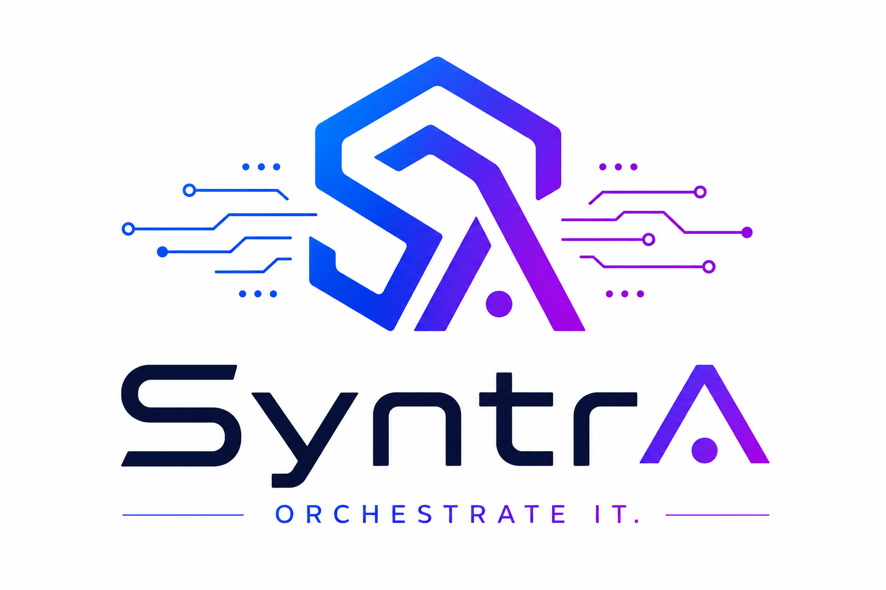

Orchestrate the path
Model repeatable flows for operations, service delivery, approvals, data movement, and handoffs across teams.

AI-supported workflow orchestration
Build coordinated business workflows that connect people, systems, and AI tools into one dependable operating layer.
Application focus
Syntra is designed around the work itself: intake, routing, execution, review, escalation, and measurement. AI tools support every stage, while orchestration keeps the process clear, auditable, and controlled.
Model repeatable flows for operations, service delivery, approvals, data movement, and handoffs across teams.
Connect CRMs, documents, spreadsheets, chat, ticketing, scripts, and internal systems into one managed process.
Put approvals, exceptions, permissions, and review checkpoints where they belong, so automation stays accountable.
Strongly supported by AI tools
Draft, classify, summarize, research, and transform work items.
Route tasks based on context, priority, and operational rules.
Generate next actions while preserving review and traceability.
Identify the decisions, systems, and handoffs that matter.
Define triggers, roles, AI support, checks, and outputs.
Launch workflows, measure outcomes, and improve with confidence.
Ready to coordinate the work?